Add PK keys to Dimension Tables
Add FK keys constraints to the Facts Tables
Populate
SQL SERVER
Server Name:
Username:
Password:
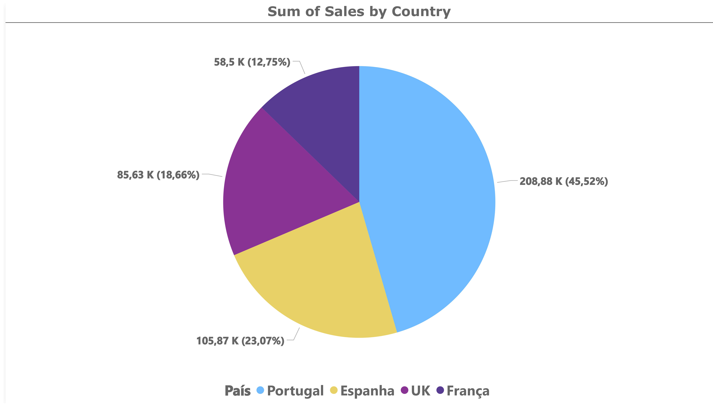
USE SQL_OLAP
GO
-- 1. Confirmar vendas por continente
-- 1. b. Confirme com uma query SQL em ambiente SQL que os valores coincidem
SELECT ds.[País], SUM(f.Vendas) AS TotalVendas
FROM Facts f WITH (NOLOCK)
JOIN DimSucursal ds WITH (NOLOCK) ON f.DimSucursal = ds.SucursalID
GROUP BY ds.[País]
ORDER BY TotalVendas DESC;
País TotalVendas
Portugal 208882,19
Espanha 105867,61
UK 85625,73
França 58502,19
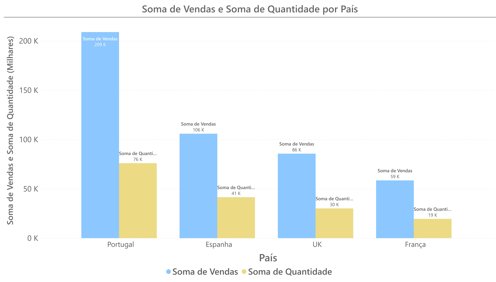
--2. Confirmar Quantidades por continente
-- 2 b. Confirme com uma query SQL em ambiente SQL que os valores coincidem
SELECT ds.[País], SUM(f.Vendas) AS TotalVendas,SUM(f.Quantidade) AS TotalQuantidades
FROM Facts f WITH (NOLOCK)
JOIN DimSucursal ds WITH (NOLOCK) ON f.DimSucursal = ds.SucursalID
GROUP BY ds.[País]
ORDER BY TotalVendas DESC;
País TotalVendas TotalQuantidades
Portugal 208882,19 75980
Espanha 105867,61 41460
UK 85625,73 30105
França 58502,19 19425
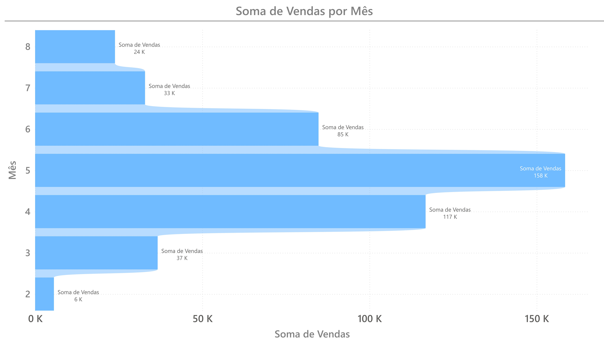
--3. Confirmar vendas por mês
--3. b. Confirme com uma query SQL em ambiente SQL que os valores coincidem
SELECT MONTH(dd.[Data]) AS Mes, SUM(f.Vendas) AS TotalVendas
FROM Facts f WITH (NOLOCK)
JOIN DimData dd WITH (NOLOCK) ON f.DimData = dd.DataID
GROUP BY MONTH(dd.[Data])
ORDER BY Mes;
Mes TotalVendas
2 5590,41
3 36611,51
4 116750,95
5 158490,54
6 84736,47
7 32842,86
8 23854,98
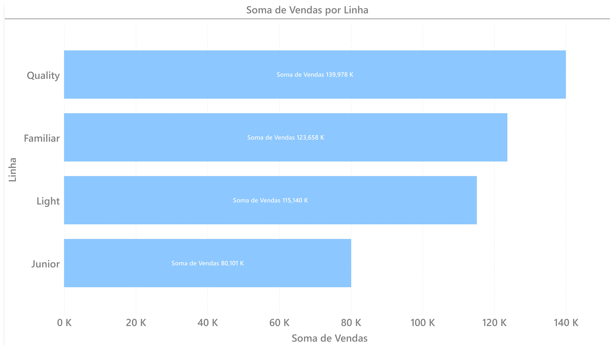
--4. Confirmar valor de Vendas por Linha de produto
--4. b. Confirme com uma query SQL em ambiente SQL que os valores coincidem
SELECT dp.Linha AS LinhaProduto, SUM(f.Vendas) AS TotalVendas
FROM Facts f WITH (NOLOCK)
JOIN DimProduto dp WITH (NOLOCK) ON f.DimProduto = dp.ProdutoID
GROUP BY dp.Linha
ORDER BY TotalVendas DESC;
LinhaProduto TotalVendas
Quality 139978,3
Familiar 123657,87
Light 115140,33
Junior 80101,22
NetSales = SUM([Vendas]) * 0.7
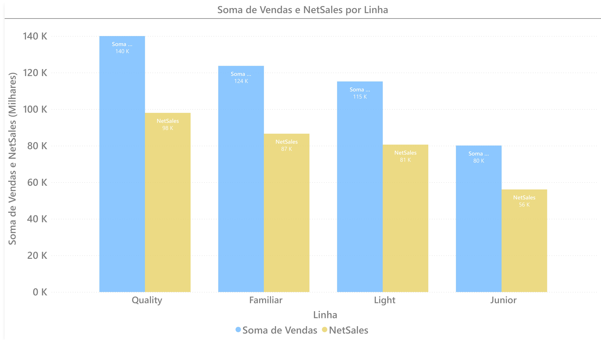
ValorUnitario = SUM([Vendas]) / SUM([Quantidade])
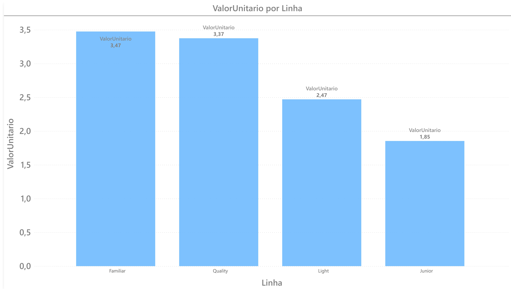
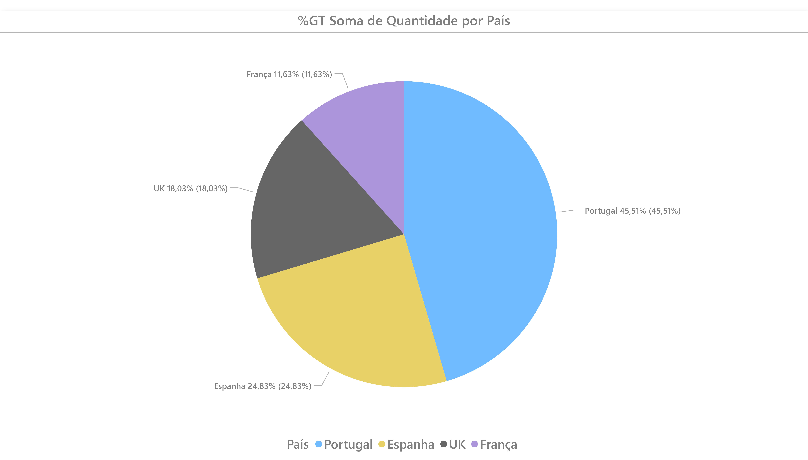
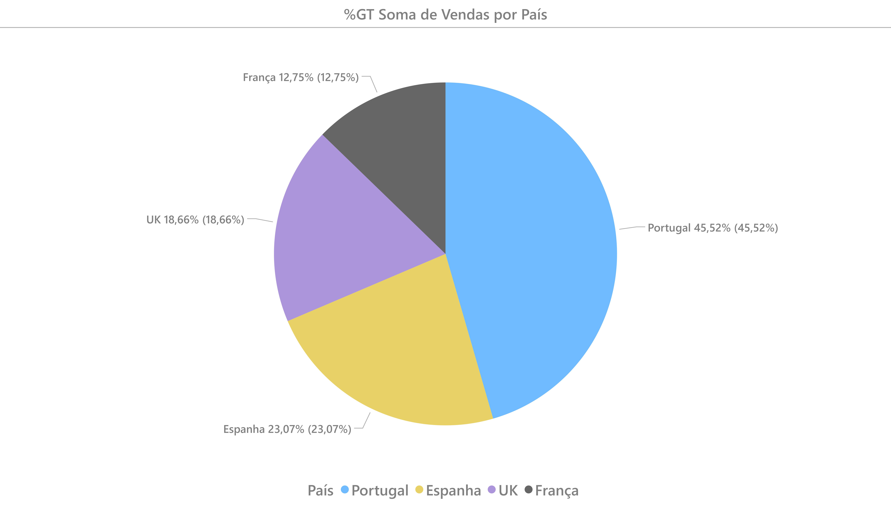
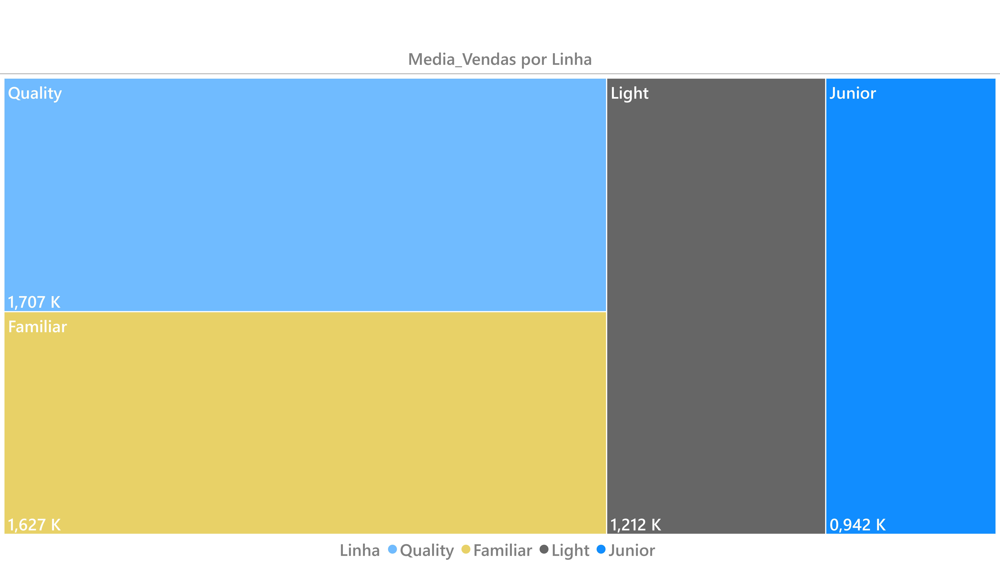
Media_Vendas = AVERAGE(Facts[Vendas])
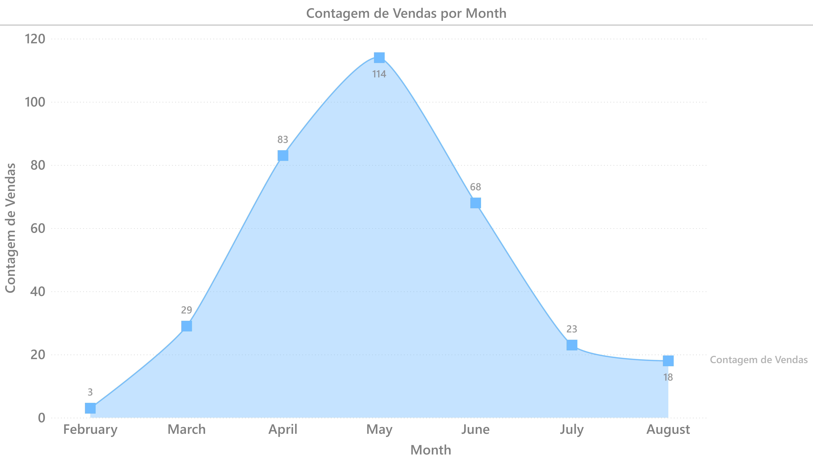
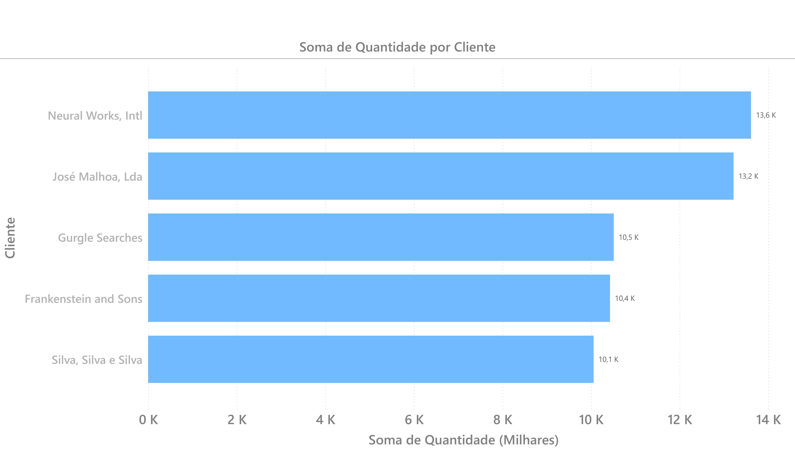
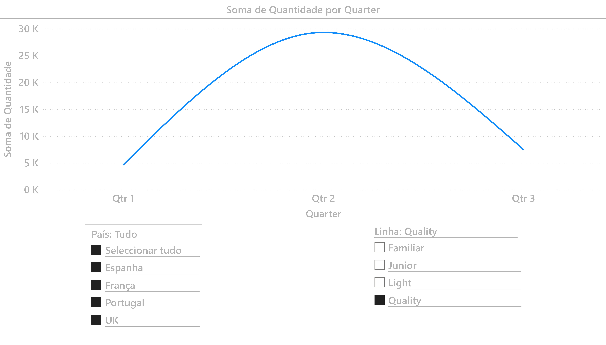
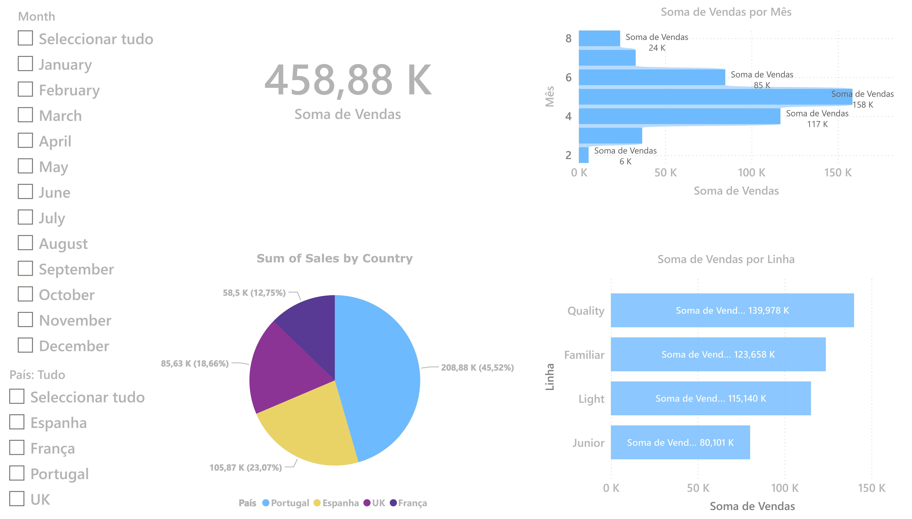